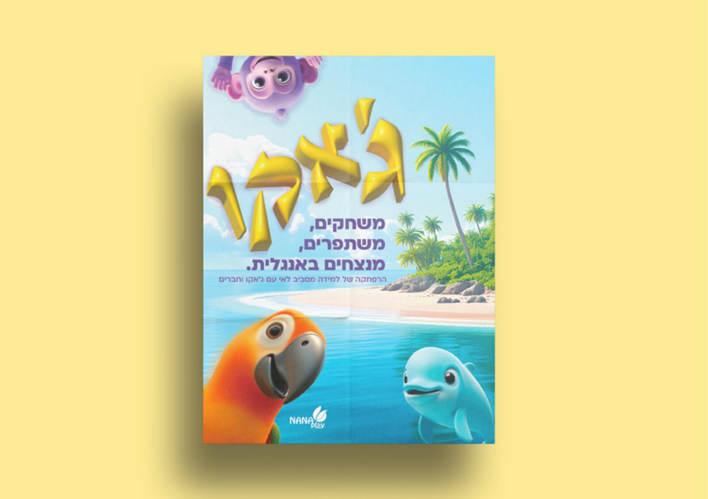
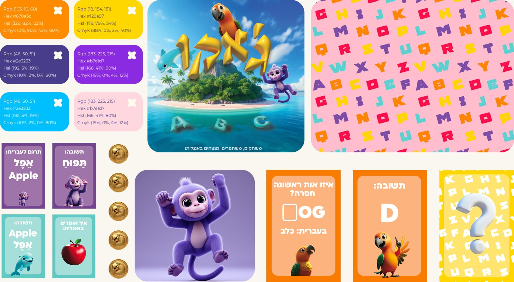
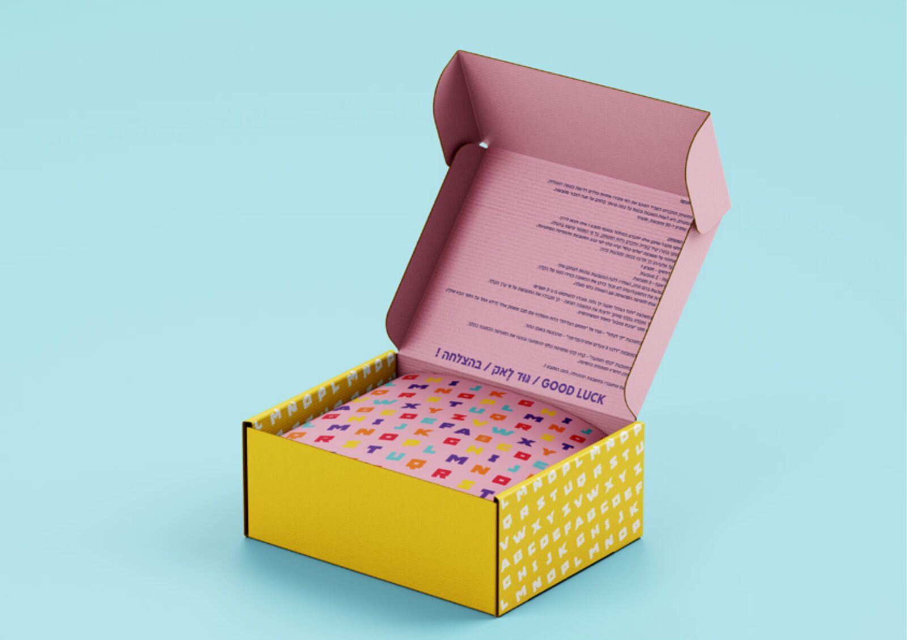
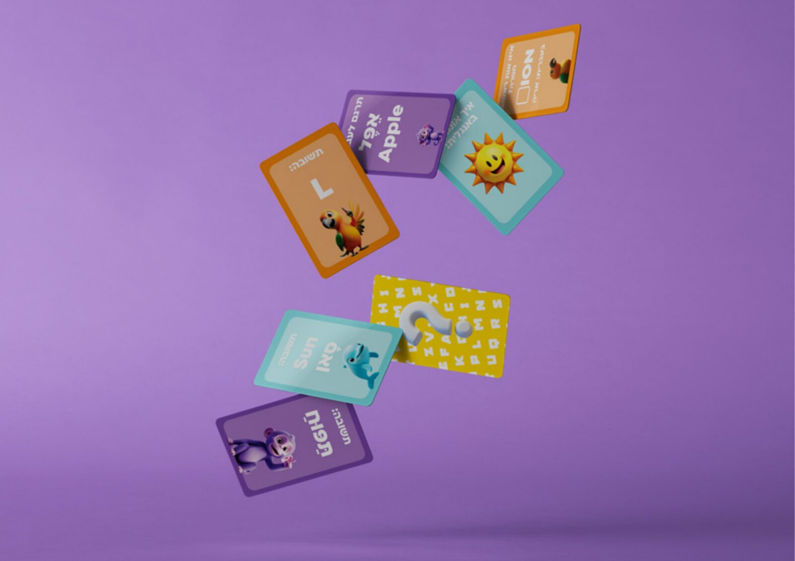

The project combines a game experience based on path progression and coin collection alongside language practice, allowing children to learn vocabulary in an intuitive, pressure-free way. הפרויקט משלב חוויית משחק המבוססת על עיקרון התקדמות במסלול והשגת מטבעות לצד תרגול שפה, ומאפשר לילדים ללמוד אוצר מילים בצורה אינטואיטיבית וללא תחושת לחץ.
Through double-sided cards and visual storytelling, Jaco turns language learning into an enjoyable experience that sparks curiosity, confidence and natural progress. באמצעות קלפים דו-צדדיים וסטוריטלינג חזותי, ג'אקו הופך את לימוד השפה לחוויה מהנה ומעוררת עניין, ביטחון והתקדמות טבעית.




